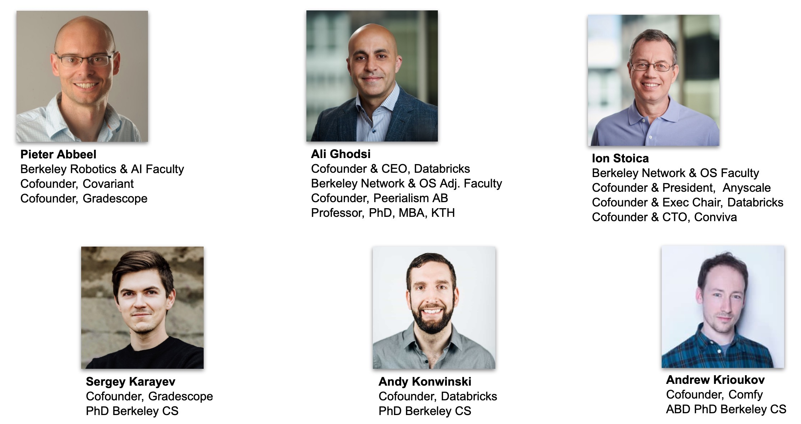
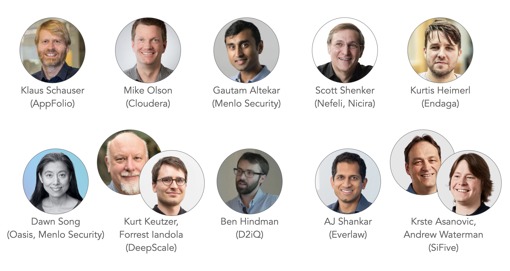
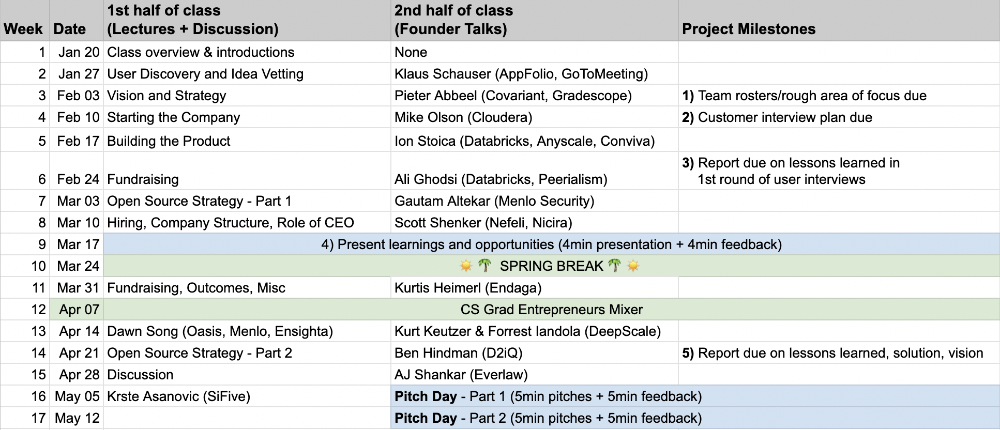

CS 294 - Research to Startup
Instructors

Founder Talks

Overview
As a CS PhD student or Postdoc, you likely understand some career paths quite well, for example: becoming a professor, an industrial lab researcher, or a software engineer. Starting your own company, on the other hand, probably seems quite difficult and risky.
This course is for Berkeley CS researchers who are curious about what it takes to create a world-changing company. Berkeley EECS researchers have led the creation of industry-defining technologies (e.g., BSD, TCP, RISK, RAID, Spark), as well as iconic technology startups (e.g., VMWare, Apple, Nicera, Inktomi, Sun Microsystems, and Tesla). We will review key lessons from these successes, with a focus on the first steps you can take to go from research to startup.
The objectives of this course are to:
- Outline the core challenges, risks, and rewards of founding a startup
- Give you a taste of the early parts of the process through the class project
- Expose you to materials that may be helpful if you decide to pursue a startup
- Introduce you to faculty, alumni, and other experts who have started companies and their learnings
- Introduce you to other students who are also interested in startups
This course will meet 5-7pm every Thursday in, according to the schedule below. Per UC Berkeley policy, at least the first two weeks of class will be held via Zoom. If/when we meet in person, classes will be in 306 Soda Hall.
All communication will be done via Slack. You will be added before class starts. You may send the instructors a Slack direct message (or email cs294-194-staff@googlegroups.com) if you have questions that are relevant to only you, but keep most of the communication public to the course.
Course Project
All students are required to complete the class project as part of a 3-6 person team. The project will require you to conduct conversations with potential users in order to identify and validate real problems and opportunities. Your project may be centered around a research hypothesis, an open source project, or an idea for a potential company. We hope the project might inform your research even if you never pursue a startup. For more details see the project page.
Schedule
During the first part of the semester, we will cover topics in the order that a Berkeley CS PhD student might encounter them on their path to becoming a startup founder. Classes in this part will generally consist of a 30-45 min lecture, and then a talk by a guest speaker. Guest speakers will mostly be experienced founders, with an emphasis on Berkeley faculty and alumni.
During the last part of the semester -- after the CSGE Student/Faculty/Alumni/VC Mixer -- class sessions will consist of discussions and guest talks about currently active areas for technical startups (e.g., security/crypto, data/AI, etc.).

Recommended Reading
The readings below are optional. We will touch on key concepts from many of these in lectures throughout the semester, and may assign specific excerpts from them. In addition, or as an alternative, to buying one of the books below, we encourage you to search for blogs that summarize the key lessons from the books.
Our top picks:
-
The Startup Owner's Manual: The Step-By-Step Guide for Building a Great Company by Steve Blank and Bob Dorf - This is the book that we found most helpful to actually get started.
-
The YC Startup Playbook - A concise resource covering diverset topice for early founders.
-
Zero to One: Notes on Startups, or How to Build the Future by Peter Thiel and Blake Masters - A short book that puts into words a lot of the philosophy behind startups.
-
Venture Deals: Be Smarter Than Your Lawyer and Venture Capitalist by Brad Feld and Jason Mendelson - Good resource for fundraising.
A few other good reads:
- Competing Against Luck: The Story of Innovation and Customer Choice - Clayton Christensen, Karen Dillon
- The Innovator's Dilemma: The Revolutionary Book That Will Change the Way You Do Business - Clayton Christensen
- Good to Great: Why Some Companies Make the Leap and Others Don't - Jim Collins
- The Hard Thing About Hard Things: Building a Business When There Are No Easy Answers - Ben Horowitz
- Crossing the Chasm: Marketing and Selling Disruptive Products to Mainstream Customers - Geoffrey A. Moore